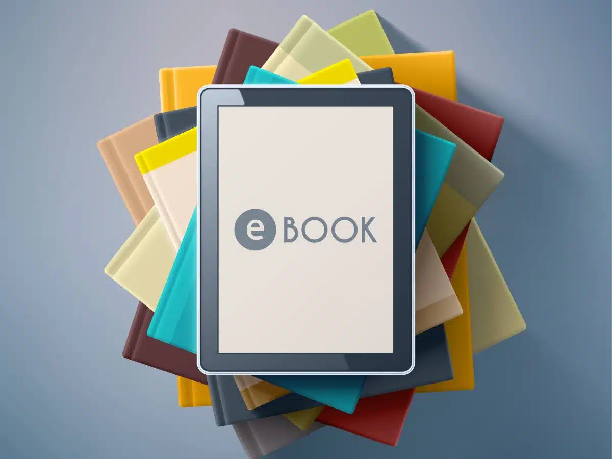

Windows
Windows 10 et 11
Télécharger le .exeNon signé : Windows affichera "Windows a protégé votre ordinateur". Cliquez sur Informations complémentaires puis Exécuter quand même.

Recherchez et téléchargez vos ebooks depuis Anna's Archive, en quelques clics, directement dans votre dossier Téléchargements.
Version 1.0.0
E-Book Downloader est une application de bureau simple qui vous permet de rechercher des livres électroniques sur Anna's Archive, de consulter les détails d'un livre, puis de le télécharger en un clic dans votre dossier de téléchargements habituel. L'application est entièrement gratuite et disponible pour Windows, Mac et Linux.
Windows 10 et 11
Télécharger le .exeNon signé : Windows affichera "Windows a protégé votre ordinateur". Cliquez sur Informations complémentaires puis Exécuter quand même.
Apple Silicon (M1 et suivants)
Télécharger le .dmg
Non signée : macOS affichera "l'application est endommagée". Ouvrez le Terminal
(dossier Applications > Utilitaires) et collez, après avoir glissé l'app dans
votre dossier Applications :
xattr -cr "/Applications/E-Book Downloader.app"
Relancez ensuite l'application normalement.
x86_64, format AppImage universel
Télécharger l'AppImage
Anna's Archive est parfois bloqué au niveau des DNS de votre fournisseur d'accès à
Internet. Le DNS (Domain Name System) est le service qui traduit un nom de domaine comme annas-archive.gl en
adresse IP joignable ; si le DNS de votre fournisseur refuse de le faire, votre
ordinateur ne peut pas atteindre le site. La solution consiste à configurer votre
ordinateur pour utiliser un DNS public (par exemple Google ou Cloudflare) à la place de
celui de votre fournisseur. Suivez le tutoriel correspondant à votre système :
Une fois les DNS changés, relancez l'application : elle vérifie automatiquement la connexion et vous propose un bouton pour retester si besoin.